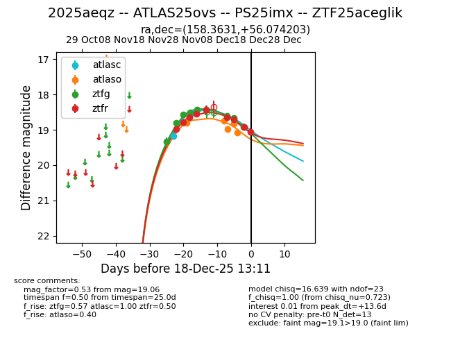
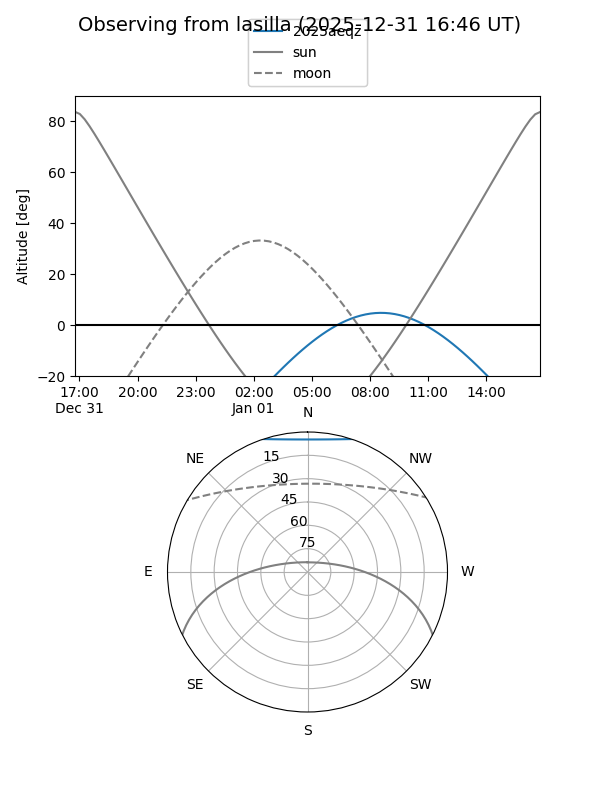
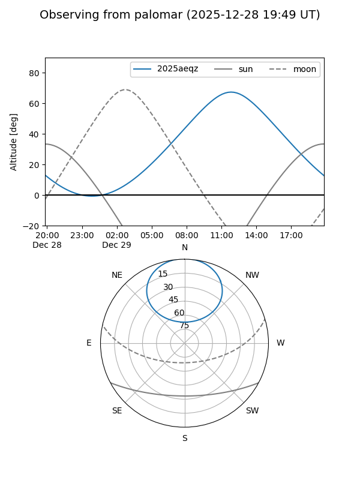
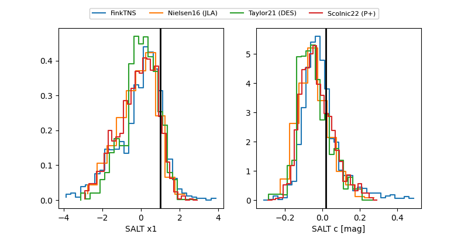

2025aeqz
Target 2025aeqz at 2025-12-18 11:17
Aliases and brokers:
FINK: fink-portal.org/ZTF25aceglik
Lasair: lasair-ztf.lsst.ac.uk/objects/ZTF25aceglik
ALeRCE: alerce.online/object/ZTF25aceglik
TNS: wis-tns.org/object/2025aeqz
YSE: ziggy.ucolick.org/yse/transient_detail/2025aeqz
alt names
ZTF25aceglik (ztf,fink_ztf)
2025aeqz (tns,yse)
ATLAS25ovs (atlas)
PS25imx (panstarrs)
Coordinates:
equatorial (ra, dec) = 158.3631,+56.07420
equatorial (HMS+DMS) = 10:33:27.15,+56:04:27.13
galactic (l, b) = (153.8041,+51.97432)
Photometry
last atlasc=18.50, atlaso=19.08, ztfg=18.92, ztfr=18.91
2 atlasc, 6 atlaso, 8 ztfg, 8 ztfr detections
Lightcurve

Visibility


Additional plots
